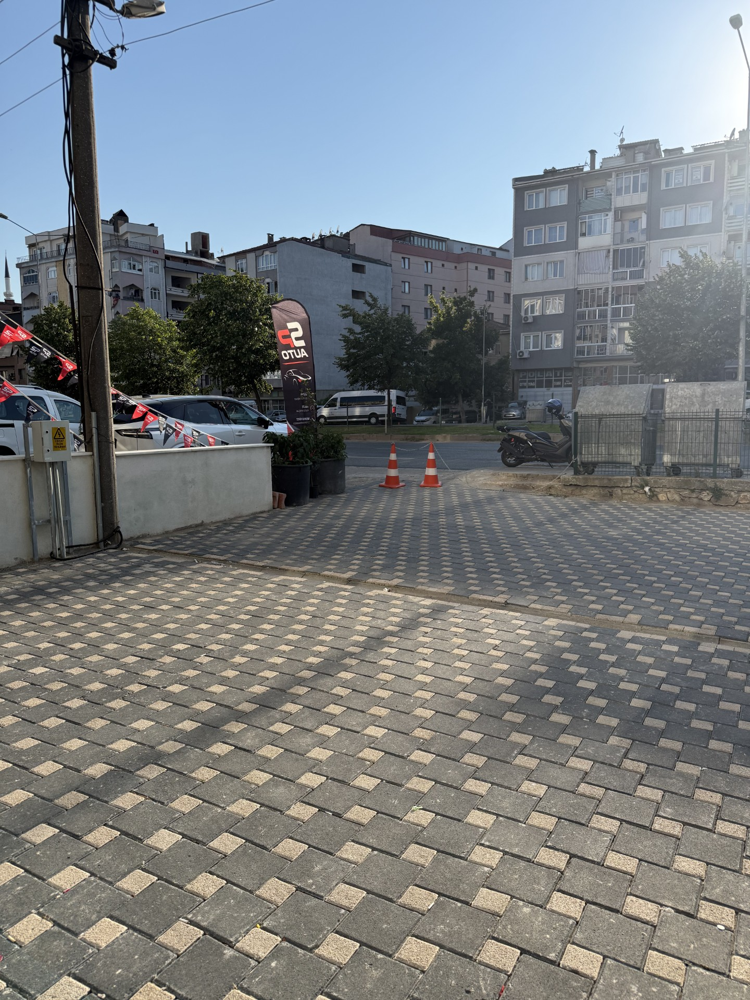

Modern dış mekân tasarımları, kaliteli malzeme
ve profesyonel uygulama ile uzun yıllar
kullanılacak yaşam alanları inşa ediyoruz.
Uzman ekibimizle uzun ömürlü ve estetik parke taşı uygulamaları.
Doğal taşlar kullanılarak inşa edilen dayanıklı ve estetik istinat duvarları.
Mekânınıza değer katan, fonksiyonel ve görsel bahçe tasarımları.
Yol ve yürüyüş yollarını birbirinden ayıran, sağlam bordür uygulamaları.
Döşeme öncesi profesyonel tesviye ve sağlam altyapı hazırlığı.
Doğayla iç içe, yeşili ön plana çıkaran profesyonel peyzaj çözümleri.

Farklı model ve ölçülerde

Çevre ve yol kenarı
Doğal görünümlü otopark çözümleri
Su yönlendirme sistemleri

Taş duvar ve dekorasyon
Altyapı ve peyzaj elemanları
Kilit Parke ve Çevre Düzenlemesi

Doğal Taş Duvar Uygulaması
Otopark Çim Taşı Döşemesi

Peyzaj ve Zemin Hazırlığı
Dekoratif Yürüyüş Yolu Bordürü
Alanı inceliyor ve ihtiyaçları belirliyoruz.
Uygun malzeme, uygulama yöntemi ve maliyeti belirliyoruz.
Zemin hazırlığından son uygulamaya kadar süreci yürütüyoruz.
Uygulamayı kontrol ederek alanı kullanıma hazır teslim ediyoruz.
Bursa, Yalova ve Çevre İller